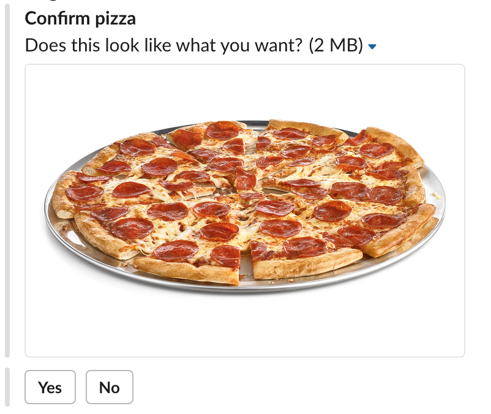

Conversational Interfaces with Dialogflow
Presented by @jayhogan
Technical Director, SingleStone Consulting
Agenda
- Conversational Interfaces
- Dialogflow Overview
- Dialogflow Concepts
- Code Walkthrough
Conversational Interfaces
What do you mean?
Some examples
Why is it hard?
Segue to Dialogflow
Dialogflow is a service that...
"gives users new ways to interact with your product by building engaging voice and text-based conversational interfaces, such as voice apps and chatbots, powered by AI."
How does it work?
Why you should care
Easy to use
Solves hard problems
Its a service, not a platform
Many built-in integrations
Dialogflow Concepts
Agent
Intents
Categorizes the user's intention for a single conversation cycle
Training Phrases
Order a pizza
Can I get a small pizza, please?
I'd like a cheese pizza
Send me a pan pizza
Deliver a medium thin crust pizza
Order a large pizza with sausage, pepperoni and cheese
Send me a pie!
Default Intents
Welcome intent
Training phrases: hi, hey, howdy, hi there, what's up?, greetings, long time no see
Responses: Hi there, Can I help you?, What can I do for you?
Fallback intent
Responses: Can you repeat that?, Sorry?, What was that?, Does not compute
Parameters
Can I get a small pizza, please?
I'd like a cheese pizza
Send me a pan pizza
Deliver a medium thin crust pizza
Order a large pizza with sausage, pepperoni and cheese
Deliver me an xl, pan pizza with spinach and onions
Define and annotate
List Parameters
I'd like a cheese pizza
I'd like a sausage and cheese pizza
I'd like a sausage, pepperoni and cheese pizza
// Maps to an array
Array.isArray(agent.parameters.toppings); // true
console.log(agent.parameters.toppings);
// ['cheese']
// ['sausage', 'cheese']
// ['sausage', 'pepperoni', 'cheese']
Parameter References
You ordered a $size $crust crust pizza with $toppings
console.log(agent.parameters);
//{ size: 'small', crust: 'thin', toppings: ['sausage', 'cheese'] }
You ordered a small thin crust pizza with sausage and cheese
Prompts
User: I'd like a pizza
Agent: What size pizza would you like?
Responses
Static
Dynamic
Platform specific
Rich (Graphical)
Rich Responses
Quick Reply
Rich Responses
Image
Rich Responses
Card
Rich Responses
Custom Payload
Entities
Types for parameters
System entities
Developer entities
System Entities
| Date and Time | date-time, date, date-period, time, time-period |
|---|---|
| Numbers | number, cardinal, ordinal, integer, sequence, flight |
| Amounts with units |
area, currency, length, speed, volume weight, percents, temperature, duration, age |
| Unit names | currencies, area, length, speed, etc... |
| Geography | address, zip code, capital, country, city, state, attraction, airports |
| Contacts | people names, email, phone numbers |
| Other stuff | colors, languages, url, etc... |
Developer entities
Type name
Type entries
Aliases for each type entry (optional)
const entity = {
type: 'Crust',
entries: [
{ name: 'thin' },
{ name: 'regular', aliases: [ 'default', 'normal', 'reg'] },
{ name: 'thick', aliases: [ 'pan', 'chicago', 'deep dish'] }
{ name: 'gluten free', aliases: [ 'gf', 'no gluten'] }
]
}
Fulfillment
Code that executes
in response to an intent
to perform custom logic and responses
How it works
Inline editor
Custom webhook
NodeJS Library
const functions = require('firebase-functions');
const { WebhookClient } = require('dialogflow-fulfillment');
// Magic function name - DO NOT CHANGE!
exports.dialogflowFirebaseFulfillment = functions.https.onRequest((request, response) => {
const agent = new WebhookClient({ request, response });
function orderPizza(agent) {
// TODO - Custom logic...
agent.add('Your pizza is in the oven!');
}
let intentMap = new Map();
intentMap.set('order-pizza', orderPizza);
agent.handleRequest(intentMap);
});
Context
User: What's the weather like in Richmond, VA?
Agent: Right now in Richmond, it's 78° under partly cloudy skies.
User: Will it rain tomorrow?
Agent: Tomorrow in Richmond, there is an 80% chance of rain.
User: Will it be hot?
Agent: Tomorrow in Richmond, the high is 85° and the low is 66°.
How it works
Integrations
Standard

And more...
Build your own integration
Example: PizzazBot
Scenario
You are the CTO for Pizzaz, a pizzeria startup in Scott's Addition.
You launched earlier this year with a custom online portal to cater to the
hipster scene.
You have a theory that a simpler, chat-based interface may win over more millenial
customers in the area.
You decide to build PizzazBot as a pilot and target the Slack and Google Assistant
platforms in the initial release.
Requirements
- Place an order
- Select size, crust and toppings
- Order multiple pizzas
- Enter delivery information
- Track pizza order by order #
Thanks for coming!
https://github.com/jayhogan/dialogflowtalk